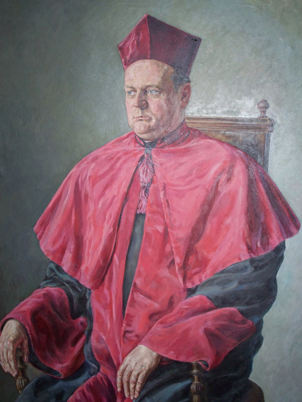
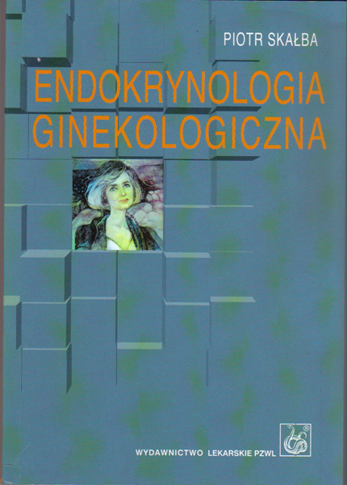
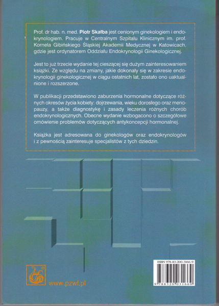
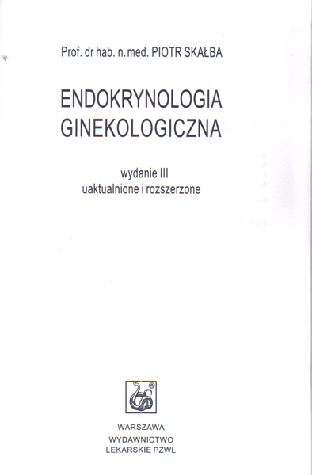
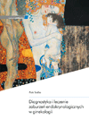
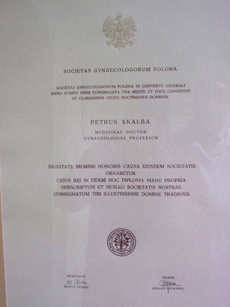
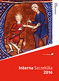

Kontakt
Specjalistyczna Praktyka Lekarska
Prof. dr hab. n. med. Piotr Skałba
specjalista ginekolog i położnik
specjalista endokrynolog
41-800 Zabrze, ul. Sądowa 22
Przyjęcia wyłącznie po uprzedniej rejestracji telefonicznej.
telefoniczna rejestracja
32 271 6681 | |
| poniedziałek | 17:00 - 18:00 |
| wtorek | 13:00 - 16:00 |
| środa | 15:00 - 16:00 |
| czwartek | - |
| piątek | 17:00 - 18:00 |
| sobota | - |
| niedziela | - |
662 016 681 | |
| poniedziałek | 15:00 - 19:00 |
| wtorek | 15:00 - 19:00 |
| środa | 15:00 - 19:00 |
| czwartek | 15:00 - 19:00 |
| piątek | 15:00 - 19:00 |
| sobota | - |
| niedziela | - |
Jestem drugim pokoleniem lekarskim. Mój ojciec doc. Henryk Skałba był znanym ginekologiem, przez wiele lat praktykował w Bytomiu. Wiele z jego pacjentek trafiło po Jego śmierci do mojej praktyki. Pracuję zawodowo już 43 lata, ponieważ jestem profesorem wiek emerytalny osiągnę w 70-tym roku życia (tj. w 2013 roku). Od początku mojej kariery zawodowej pracowałem w Śląskim Uniwersytecie Medycznym (przed zmianą nazwy - Śląskiej Akademii Medycznej). W tej Uczelni uzyskałem stopnie naukowe: doktora i doktora habilitowanego nauk medycznych oraz w wieku 42 lat tytuł profesora. Kierowałem jednostkami Uczelni w Zabrzu i Katowicach.
Jestem specjalistą ginekologii i położnictwa, a także specjalistą endokrynologii. Jestem autorem licznych prac naukowych, promotorem doktorów i opiekunem doktorów habilitowanych. Jestem autorem książek medycznych i rozdziałów do książek. Dużą poczytność uzyskała moja książka: "Endokrynologia ginekologiczna", która doczekała się już III wydania a także Diagnostyka i leczenie zaburzeń endokrynologicznych w ginekologii. Jestem Członkiem Honorowym Polskiego Towarzystwa Ginekologicznego. Szczegóły dot. mojego życiorysu zawodowego można znaleźć na stronach Śląskiego Uniwersytetu Medycznego i w licznych publikacjach biograficznych.
Praktykę prywatną prowadzę już od 40 lat. Mam liczne grono stałych pacjentek z całej Polski. Ostatnio zajmuję się głównie leczeniem zaburzeń endokrynologicznych u kobiet, leczę również inne choroby ginekologiczne i niepłodność małżeńską.
Jestem żonaty, mam troje dzieci i troje wnuków. Moje dzieci to kolejne pokolenie medyków.
|  |  |  |  |  |  | |||||
| portret ojca | moja książka | moja książka | moja książka | moja książka | dyplom |
|  | Interna Szczeklika - Podręcznik chorób wewnętrznych Rozdział: Choroby Jajnika - Piotr Skałba Rok wydania: 2016 r., Wydawca: Medycyna Praktyczna |
||
| praca zbiorowa |
 |
||
| dyplom | moja nie żyjąca już Dora |